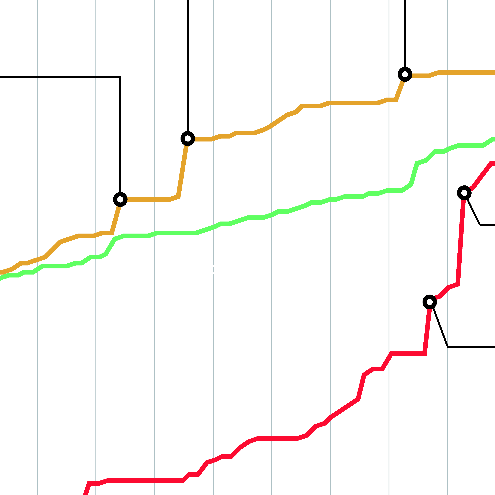

The Deep Web (also called, not always properly, Dark Web, Invisible Web, Hidden Web Dark Net…) is the portion of the World Wide Web that is not indexed by standard search engines: in particular we worked on the portion of the Deep Web that is browsable with the Tor Browser and that have a .onion domain. Tor Browser is a free software, developed by the Tor Project group, for enabling online anonymity and resisting censorship. It is designed to make it possible for users to surf the Internet anonymously, so their activities and location cannot be discovered by government agencies, corporations, or anyone else. There is still a lot of terminological confusion speaking of the Deep Web and the Tor, because it is a growing and unclear phenomenon, often the term Dark Web is used with a bad sense to influence public opinion. Tor Browser is used by a wide variety of people for both licit and illicit purposes. The Tor Project says Tor's users include "normal people" who want to keep their internet activities private from websites and advertisers, people concerned about cyber-spying, users who are evading censorship such as activists and journalists, and military professionals. Tor is used for matters that are, or may be, illegal in some countries, to gain access to censored information, to organize political activities, or to circumvent laws against criticism of heads of state. Lately an operation called Operation Onymous, that involved the police forces of 17 countries, shuts down a lot of online drug markets such as Silk Road 2.0, bringing to the fore the illegal activities that are conducted into the Deep Web.
By Alessio Candido, Susanna Castelli, Marco Colombo, Agnese Cunsolo, Giorgia Volinia
A trip into the Deep
chapters

Scanning the knowledge (Wikipedia analysis)
This protocol aims to discover links between Wikipedia pages inherent our topic, in order to find out connections, clustering and alignments of themes around a specific area of knowledge. In addition we tried out people’s activity in Deep Web and Tor network Wikipedia pages.
The Onion core (Gitweb’s Tor analysis)
The aim of this research protocol was to understand who and how is developing the Tor Project, to catch beliefs and values promoted by the project itself.

Words matter (Google queries text analysis)
The aim of this research protocol was to bring out the most used words and terms about the Deep Web, in order to understand how people talk about the topic.
People’s contribution (Youtube analysis)
With this protocol we wanted to investigate how users deal with the Deep web and the Tor Browser by videos. This research provide many results to see people activity and imaginary.
project by
- Alessio Candido
- Susanna Castelli
- Marco Colombo
- Agnese Cunsolo
- Giorgia Volinia
Faculty
- Paolo Ciuccarelli
- Marco Fattore
- Stefano Mandato
- Donato Ricci
- Salvatore Zingale
Teaching Assistants
- Matteo Azzi
- Daniele Ciminieri
- Michele Mauri
- Azzurra Pini
- Giorgio Uboldi